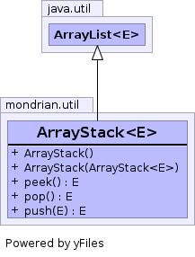

E - Element typepublic class ArrayStack<E> extends ArrayList<E>
ArrayList.
More efficient than Stack, which extends
Vector and is
therefore synchronized whether you like it or not.

modCount| Constructor and Description |
|---|
ArrayStack()
Default constructor.
|
ArrayStack(ArrayStack<E> toCopy)
Copy Constructor
|
| Modifier and Type | Method and Description |
|---|---|
E |
peek()
Analogous to
Stack.peek(). |
E |
pop()
Analogous to
Stack.pop(). |
E |
push(E item)
Analogous to
Stack.push(E). |
add, add, addAll, addAll, clear, clone, contains, ensureCapacity, get, indexOf, isEmpty, iterator, lastIndexOf, listIterator, listIterator, remove, remove, removeAll, removeRange, retainAll, set, size, subList, toArray, toArray, trimToSizeequals, hashCodecontainsAll, toStringfinalize, getClass, notify, notifyAll, wait, wait, waitcontainsAll, equals, hashCodepublic ArrayStack()
public ArrayStack(ArrayStack<E> toCopy)
toCopy - Instance of ArrayStack to copy.public E push(E item)
Stack.push(E).public E pop()
Stack.pop().public E peek()
Stack.peek().